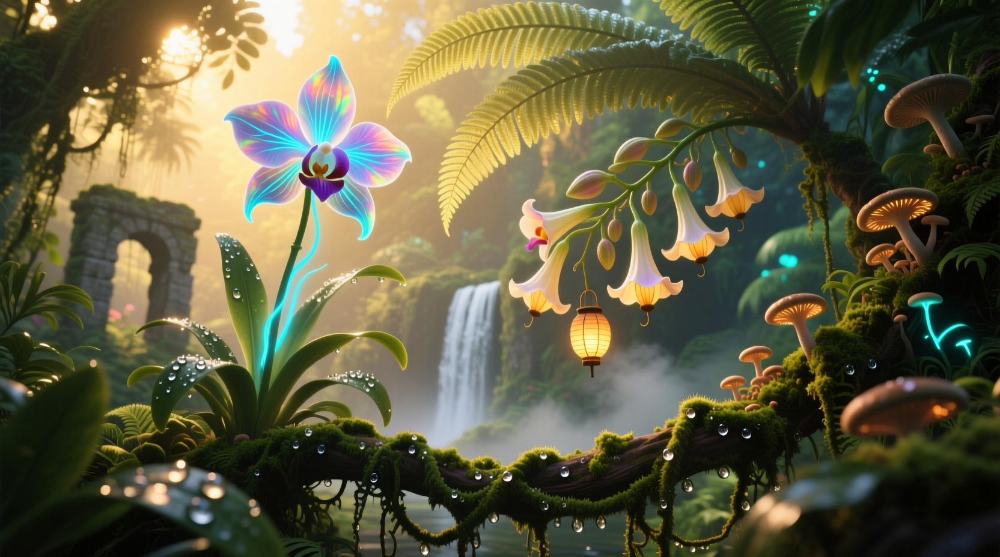
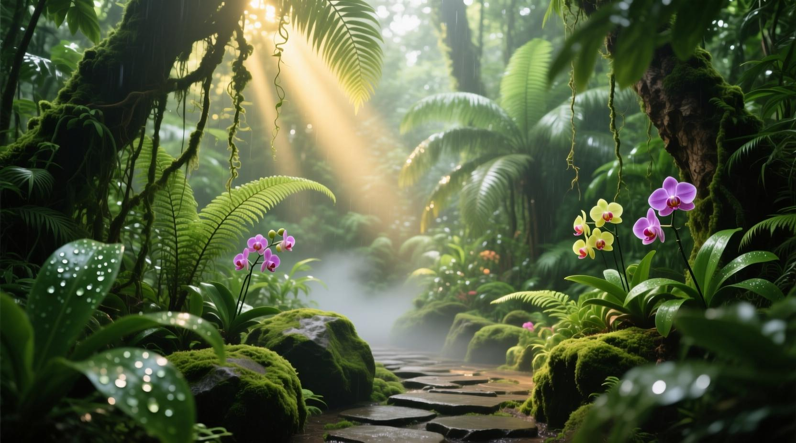

Descubrir
Conocer el valor del agua y su relación con la vida.
UNA AVENTURA POR LA NATURALEZA COLOMBIANA
Descubre los secretos del agua, toma decisiones y conviértete en un guardián de la vida.
EL LLAMADO DE LA NATURALEZA
Explora paisajes extraordinarios y descubre por qué cuidar el agua es una aventura que nos necesita a todos.

Si no hay un video disponible, puedes continuar explorando la presentación del proyecto.
NUESTRA ESENCIA
Guardianes del Agua es una experiencia multimedia educativa diseñada para que niños y niñas descubran la importancia del agua mediante una aventura interactiva.
A través de personajes, paisajes, decisiones y pequeñas misiones, buscamos promover hábitos responsables y el cuidado de los ecosistemas relacionados con el agua.
Conoce al equipo creador
Conocer el valor del agua y su relación con la vida.
Explorar situaciones y comprender sus consecuencias.
Transformar lo aprendido en hábitos cotidianos.
EL EQUIPO DETRÁS DE LA AVENTURA
Un equipo multidisciplinario que une creatividad, tecnología y educación para dar vida a esta experiencia.
Definición del estilo visual, diseño gráfico y estructuración del contenido educativo, garantizando la armonía del proyecto.
Creación de personajes, escenarios vectoriales y prototipado visual, aportando en la experiencia narrativa de la interfaz.
Producción de animaciones, transiciones dinámicas y desarrollo de la lógica interactiva para el sistema de retroalimentación.
Construcción de la One Page, integración de componentes y apoyando en la implementación de la experiencia multimedia.
Maquetación y adecuación de la One Page, junto con la creación de la identidad visual y estética general del proyecto.
EL AGUA NOS NECESITA
La aventura educativa te espera. Descubre, decide y aprende a cuidar el agua.
Quiero explorarLa aventura interactiva se abrirá aquí cuando esté integrada.